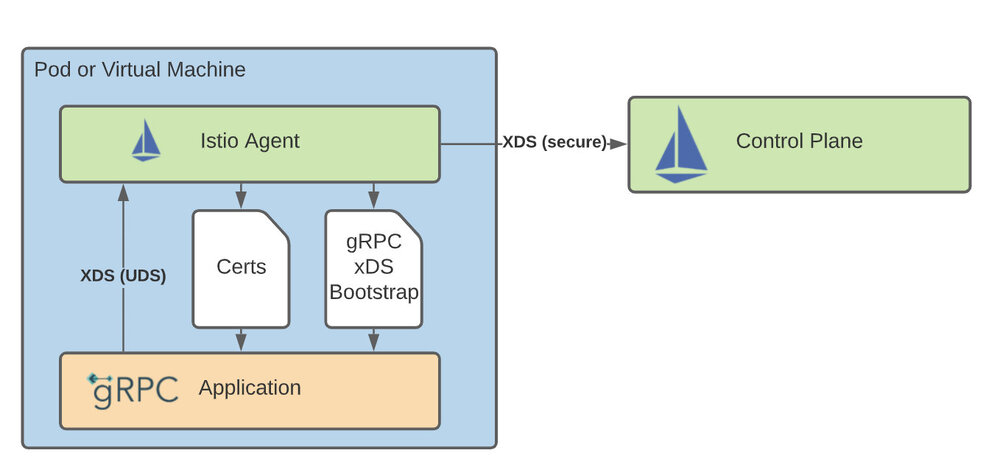
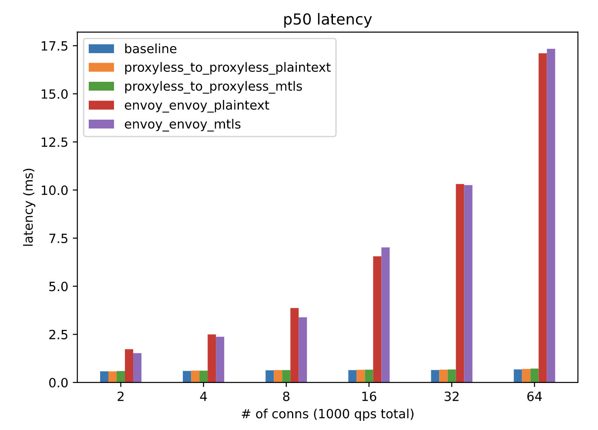
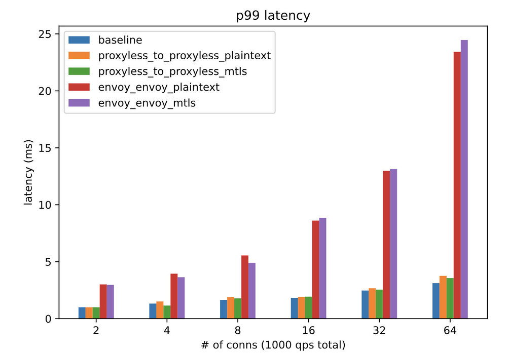

译者注：本文译自 Istio 官方博客，博客原标题 gRPC Proxyless Service Mesh，其实是 Istio 1.11 版本中支持的实验特性，可以直接将 gRPC 服务添加到 Istio 中，而不需要再向 Pod 中注入 Envoy 代理。本文中还给出了一个 Demo 性能测试数据，这种做法可以极大的提升应用性能，降低网络延迟。
Istio 使用一组发现 API（统称为 xDS API 来动态配置其 Envoy sidecar 代理。这些 API 的目标是成为一个 通用的数据平面 API。gRPC 项目对 xDS API 有很好的支持，也就是说你可以管理 gRPC 工作负载，而不需要同时部署 Envoy sidecar。你可以在 Megan Yahya 的 KubeCon EU 2021 演讲中了解更多关于该集成的信息。关于 gRPC 支持的最新情况，可以在他们的提案中找到，还有实现状态。
Istio 1.11 增加了实验性支持，可以直接将 gRPC 服务添加到网格中。我们支持基本的服务发现，一些基于 VirtualService 的流量策略，以及双向 TLS。
支持的功能
与 Envoy 相比，目前 gRPC 内的 xDS API 的实现在某些方面是有限的。以下功能应该可以使用，尽管这不是一个详尽的列表，其他功能可能部分可用。
- 基本的服务发现。你的 gRPC 服务可以接触到在网格中注册的其他 pod 和虚拟机。
DestinationRuleSubset：你的 gRPC 服务可以根据标签选择器将流量分割到不同的实例组。- 目前唯一支持的 Istio
loadBalancer是ROUND_ROBIN，consistentHash将在未来的 Istio 版本中加入（支持 gRPC）。 tls设置被限制为DISABLE或ISTIO_MUTUAL。其他模式将被视为DISABLE。
VirtualService- Header 匹配和 URI 匹配的格式为
/ServiceName/RPCName。 - 覆盖目标主机和子集。
- 加权的流量转移。
- Header 匹配和 URI 匹配的格式为
PeerAuthentication- 只支持
DISABLE和STRICT。其他模式将被视为DISABLE。 - 在未来的版本中可能会有对 auto-mTLS 的支持。
- 只支持
其他功能包括故障、重试、超时、镜像和重写规则，可能会在未来的版本中支持。其中一些功能正等待在 gRPC 中实现，而其他功能则需要在 Istio 中支持。gRPC 中 xDS 功能的状态可以在这里找到。Istio 的支持状况将存在于未来的官方文档中。
这个功能是实验性的。标准的 Istio 功能将随着时间的推移和整体设计的改进而得到支持。
架构概述

gRPC 服务如何与 istiod 通信的示意图
虽然不使用 proxy 进行数据面通信，但它仍然需要一个 agent 来进行初始化和与控制面的通信。首先，agent 在启动时生成一个引导文件，与为 Envoy 生成引导文件的方式相同。这告诉 gRPC 库如何连接到 istiod，在哪里可以找到数据面通信的证书，以及向控制面发送什么元数据。接下来，agent 作为一个 xDS proxy，代表应用程序与 istiod 进行连接和认证。最后，agent 获取并轮换数据平面通信中使用的证书。
对应用程序代码的修改
本节介绍了 gRPC 在 Go 中的 xDS 支持。其他语言也有类似的 API。
为了启用 gRPC 中的 xDS 功能，你的应用程序必须做一些必要的修改。你的 gRPC 版本应该至少是 1.39.0。
客户端
下面的导入将在 gRPC 中注册 xDS 解析器和均衡器。它应该被添加到你的主包或调用 grpc.Dial 的同一个包中。
import _ "google.golang.org/grpc/xds"
当创建一个 gRPC 连接时，URL 必须使用 xds:/// scheme。
conn, err := grpc.DialContext(ctx, "xds:///foo.ns.svc.cluster.local:7070")
此外，为了支持（m）TLS，必须向 DialContext 传递一个特殊的 TransportCredentials 选项。FallbackCreds 允许我们在 istiod 不发送安全配置时成功。
import "google.golang.org/grpc/credentials/xds"
...
creds, err := xds.NewClientCredentials(xds.ClientOptions{
FallbackCreds: insecure.NewCredentials()
})
// handle err
conn, err := grpc.DialContext(
ctx,
"xds:///foo.ns.svc.cluster.local:7070",
grpc.WithTransportCredentials(creds),
)
服务端
为了支持服务器端的配置，如 mTLS，必须做一些修改。
首先，我们使用一个特殊的构造函数来创建 GRPCServer。
import "google.golang.org/grpc/xds"
...
server = xds.NewGRPCServer()
RegisterFooServer(server, &fooServerImpl)
如果你的 protoc 生成的 Go 代码已经过期，你可能需要重新生成，以便与 xDS 服务器兼容。你生成的 RegisterFooServer 函数应该像下面这样。
func RegisterFooServer(s grpc.ServiceRegistrar, srv FooServer) {
s.RegisterService(&FooServer_ServiceDesc, srv)
}
最后，与客户端的变化一样，我们必须启用安全支持。
creds, err := xds.NewServerCredentials(xdscreds.ServerOptions{FallbackCreds: insecure.NewCredentials()})
// handle err
server = xds.NewGRPCServer(grpc.Creds(creds))
在你的 Kubernetes 部署中
假设你的应用代码是兼容的，Pod 只需要注释 inject.istio.io/templates：grpc-agent。这增加了一个运行上述代理的 sidecar 容器，以及一些环境变量，gRPC 使用这些变量来寻找引导文件并启用某些功能。
对于 gRPC 服务端，你的 Pod 也应该用 proxy.istio.io/config: '{"holdApplicationUntilProxyStarts": true}' 来注释，以确保在你的 gRPC 服务端初始化之前，代理中的 xDS 代理和引导文件已经准备就绪。
例子
在本指南中，你将部署 echo，一个已经支持服务器端和客户端无代理的 gRPC 的应用。通过这个应用程序，你可以尝试一些支持的流量策略，启用 mTLS。
先决条件
本指南要求在进行之前安装 Istio（1.11+）控制平面。
部署应用程序
创建一个支持注入的命名空间 echo-grpc。接下来部署两个 echo 应用程序的实例以及服务。
$ kubectl create namespace echo-grpc
$ kubectl label namespace echo-grpc istio-injection=enabled
$ kubectl -n echo-grpc apply -f samples/grpc-echo/grpc-echo.yaml
确保两个 Pod 正在运行。
$ kubectl -n echo-grpc get pods
NAME READY STATUS RESTARTS AGE
echo-v1-69d6d96cb7-gpcpd 2/2 Running 0 58s
echo-v2-5c6cbf6dc7-dfhcb 2/2 Running 0 58s
测试 gRPC 解析器
首先，将 17171 端口转发到其中一个 Pod 上。这个端口是一个非 xDS 支持的 gRPC 服务端，允许从端口转发的 Pod 发出请求。
$ kubectl -n echo-grpc port-forward $(kubectl -n echo-grpc get pods -l version=v1 -ojsonpath='{.items[0].metadata.name}') 17171 &
接下来，我们可以发送一批 5 个请求。
$ grpcurl -plaintext -d '{"url": "xds:///echo.echo-grpc.svc.cluster.local:7070", "count": 5}' :17171 proto.EchoTestService/ForwardEcho | jq -r '.output | join("")' | grep Hostname
Handling connection for 17171
[0 body] Hostname=echo-v1-7cf5b76586-bgn6t
[1 body] Hostname=echo-v2-cf97bd94d-qf628
[2 body] Hostname=echo-v1-7cf5b76586-bgn6t
[3 body] Hostname=echo-v2-cf97bd94d-qf628
[4 body] Hostname=echo-v1-7cf5b76586-bgn6t
你也可以使用类似 Kubernetes 名称解析的短名称。
$ grpcurl -plaintext -d '{"url": "xds:///echo:7070"}' :17171 proto.EchoTestService/ForwardEcho | jq -r '.output | join
("")' | grep Hostname
[0 body] Hostname=echo-v1-7cf5b76586-ltr8q
$ grpcurl -plaintext -d '{"url": "xds:///echo.echo-grpc:7070"}' :17171 proto.EchoTestService/ForwardEcho | jq -r
'.output | join("")' | grep Hostname
[0 body] Hostname=echo-v1-7cf5b76586-ltr8q
$ grpcurl -plaintext -d '{"url": "xds:///echo.echo-grpc.svc:7070"}' :17171 proto.EchoTestService/ForwardEcho | jq -r
'.output | join("")' | grep Hostname
[0 body] Hostname=echo-v2-cf97bd94d-jt5mf
用目的地规则创建子集
首先，为每个版本的工作负载创建一个子集。
$ cat <<EOF | kubectl apply -f -
apiVersion: networking.istio.io/v1alpha3
kind: DestinationRule
metadata:
name: echo-versions
namespace: echo-grpc
spec:
host: echo.echo-grpc.svc.cluster.local
subsets:
- name: v1
labels:
version: v1
- name: v2
labels:
version: v2
EOF
流量转移
使用上面定义的子集，你可以把 80% 的流量发送到一个特定的版本。
$ cat <<EOF | kubectl apply -f -
apiVersion: networking.istio.io/v1beta1
kind: VirtualService
metadata:
name: echo-weights
namespace: echo-grpc
spec:
hosts:
- echo.echo-grpc.svc.cluster.local
http:
- route:
- destination:
host: echo.echo-grpc.svc.cluster.local
subset: v1
weight: 20
- destination:
host: echo.echo-grpc.svc.cluster.local
subset: v2
weight: 80
EOF
现在，发送一组 10 个请求。
grpcurl -plaintext -d '{"url": "xds:///echo.echo-grpc.svc.cluster.local:7070", "count": 10}' :17171 proto.EchoTestService/ForwardEcho | jq -r '.output | join("")' | grep ServiceVersion
响应应主要包含 v2 响应。
[0 body] ServiceVersion=v2
[1 body] ServiceVersion=v2
[2 body] ServiceVersion=v1
[3 body] ServiceVersion=v2
[4 body] ServiceVersion=v1
[5 body] ServiceVersion=v2
[6 body] ServiceVersion=v2
[7 body] ServiceVersion=v2
[8 body] ServiceVersion=v2
[9 body] ServiceVersion=v2
启用 mTLS
由于在 gRPC 中启用安全所需的应用程序本身的变化，Istio 的自动检测 mTLS 支持的传统方法是不可靠的。出于这个原因，初始版本需要在客户端和服务端上明确启用 mTLS。
要启用客户端的 mTLS，请应用带有 tls 设置的 DestinationRule。
$ cat <<EOF | kubectl apply -f -
apiVersion: networking.istio.io/v1alpha3
kind: DestinationRule
metadata:
name: echo-mtls
namespace: echo-grpc
spec:
host: echo.echo-grpc.svc.cluster.local
trafficPolicy:
tls:
mode: ISTIO_MUTUAL
EOF
现在，试图调用尚未配置 mTLS 的服务器将会失败。
$ grpcurl -plaintext -d '{"url": "xds:///echo.echo-grpc.svc.cluster.local:7070"}' :17171 proto.EchoTestService/ForwardEcho | jq -r '.output | join("")'
Handling connection for 17171
ERROR:
Code: Unknown
Message: 1/1 requests had errors; first error: rpc error: code = Unavailable desc = all SubConns are in TransientFailure
为了启用服务器端的 mTLS，应用一个 PeerAuthentication。
以下策略对整个命名空间强制采用 STRICT mTLS。
$ cat <<EOF | kubectl apply -f -
apiVersion: security.istio.io/v1beta1
kind: PeerAuthentication
metadata:
name: echo-mtls
namespace: echo-grpc
spec:
mtls:
mode: STRICT
EOF
应用该政策后，请求将开始成功。
$ grpcurl -plaintext -d '{"url": "xds:///echo.echo-grpc.svc.cluster.local:7070"}' :17171 proto.EchoTestService/ForwardEcho | jq -r '.output | join("")'
Handling connection for 17171
[0] grpcecho.Echo(&{xds:///echo.echo-grpc.svc.cluster.local:7070 map[] 0 5s false })
[0 body] x-request-id=0
[0 body] Host=echo.echo-grpc.svc.cluster.local:7070
[0 body] content-type=application/grpc
[0 body] user-agent=grpc-go/1.39.1
[0 body] StatusCode=200
[0 body] ServiceVersion=v1
[0 body] ServicePort=17070
[0 body] Cluster=
[0 body] IP=10.68.1.18
[0 body] IstioVersion=
[0 body] Echo=
[0 body] Hostname=echo-v1-7cf5b76586-z5p8l
限制条件
最初的版本有几个限制，可能会在未来的版本中修复。
- 不支持自动 mTLS，也不支持许可模式。相反，我们需要在服务器上使用
STRICT，在客户端使用ISTIO_MUTUAL的明确 mTLS 配置。在迁移到STRICT的过程中，可以使用 Envoy。 grpc.Serve(listener)或grpc.Dial("xds://...")在 bootstrap 被写入或 xDS 代理准备好之前被调用会导致失败。holdApplicationUntilProxyStarts可以用来解决这个问题，或者应用程序可以对这些失败更加稳健。- 如果支持 xDS 的 gRPC 服务器使用 mTLS，那么你将需要确保你的健康检查可以绕过这个问题。要么使用一个单独的端口，要么你的健康检查客户端需要一种方法来获得适当的客户端证书。
- gRPC 中 xDS 的实现与 Envoy 不一致。某些行为可能不同，某些功能可能缺失。gRPC 的功能状态提供了更多细节。请确保测试任何 Istio 配置是否真正适用于你的无代理的 gRPC 应用程序。
性能
实验设置
- 使用 Fortio，一个基于 Go 的负载测试应用程序
- 稍作修改，以支持 gRPC 的 XDS 功能 (PR)
- 资源：
- GKE 1.20 集群有 3 个
e2-standard-16节点（每个节点有 16 个 CPU+64GB 内存） - Fortio 客户端和服务器应用程序：1.5 vCPU，1000 MiB 内存
- Sidecar（istio-agent 和可能的 Envoy 代理）：1 vCPU，512 MiB 内存
- GKE 1.20 集群有 3 个
- 测试的工作负载类型：
- 基线：常规的 gRPC，没有使用 Envoy 代理或 Proxyless xDS
- Envoy：标准的 istio-agent + Envoy proxy sidecar
- 无代理：使用 xDS gRPC 服务器实现的 gRPC 和客户端的
xds:///解析器。 - 通过
PeerAuthentication和DestinationRule启用 / 停用 mTLS
延迟

P50 延迟对比图

P99 延迟对比图
在使用无代理的 gRPC 解析器时，延迟会有微小的增加。与 Envoy 相比，这是一个巨大的改进，仍然可以实现先进的流量管理功能和 mTLS。
istio-proxy 容器的资源使用情况
| 类别 | 客户端 mCPU |
客户端内存 (MiB) |
服务端 mCPU |
服务端内存 (MiB) |
|---|---|---|---|---|
| Envoy 明文 | 320.44 | 66.93 | 243.78 | 64.91 |
| Envoy mTLS | 340.87 | 66.76 | 309.82 | 64.82 |
| 无代理明文 | 0.72 | 23.54 | 0.84 | 24.31 |
| 无代理 mTLS | 0.73 | 25.05 | 0.78 | 25.43 |
尽管我们仍然需要一个代理，但代理使用的内存不到完整 vCPU 的 0.1%，而且只有 25 MiB，这还不到运行 Envoy 所需内存的一半。
这些指标不包括应用容器中 gRPC 的额外资源使用量，但有助于展示 istio-agent 在此模式下运行时的资源使用影响。